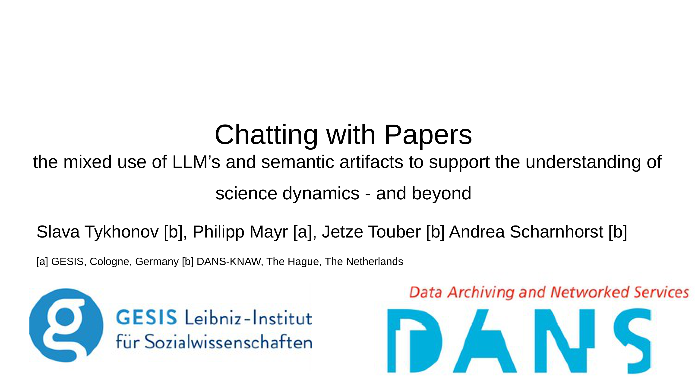
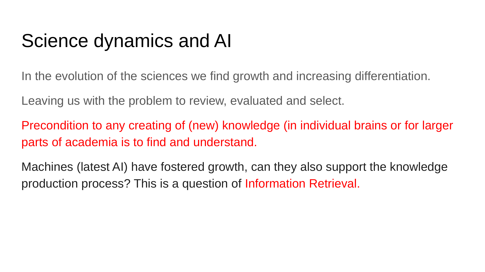
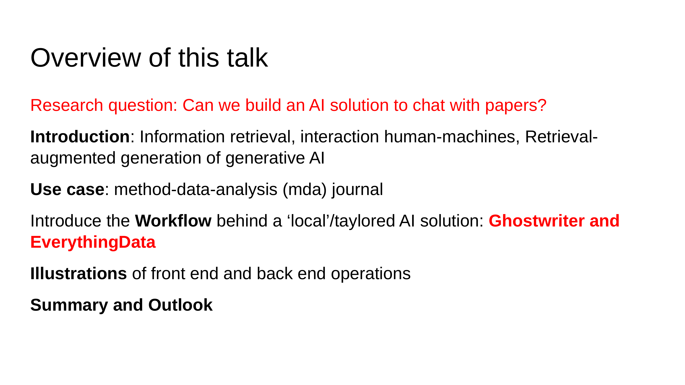
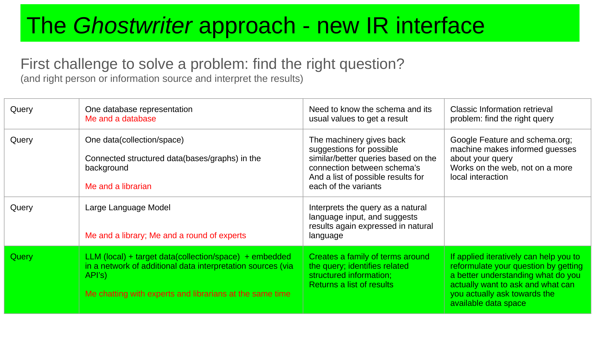
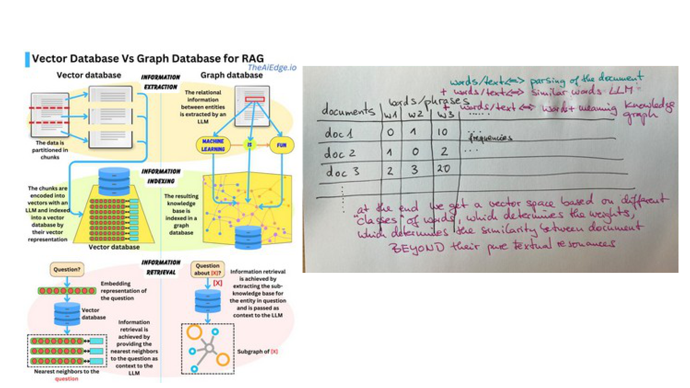
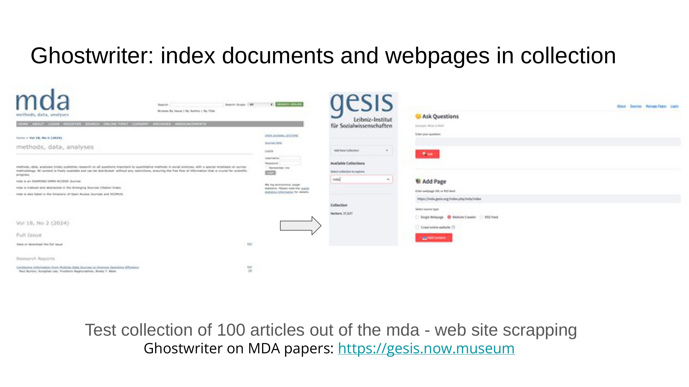
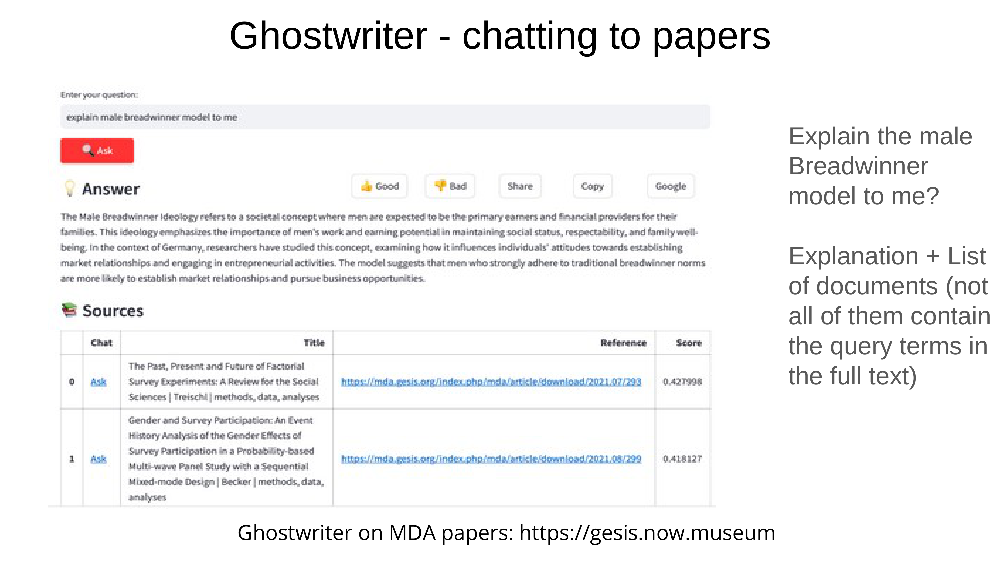
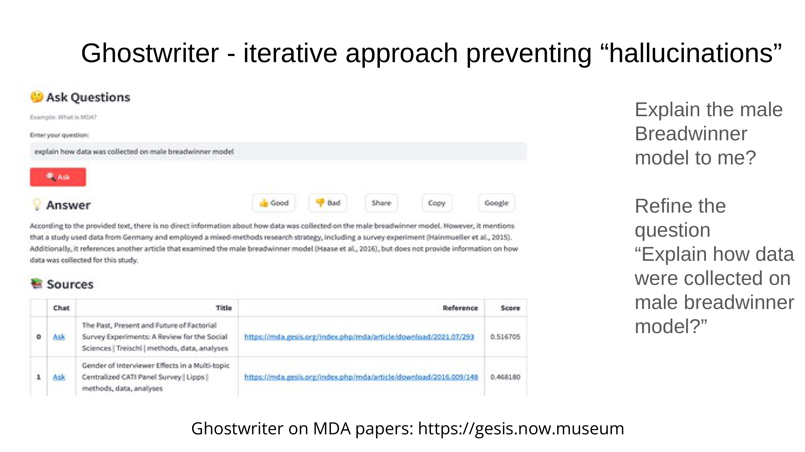
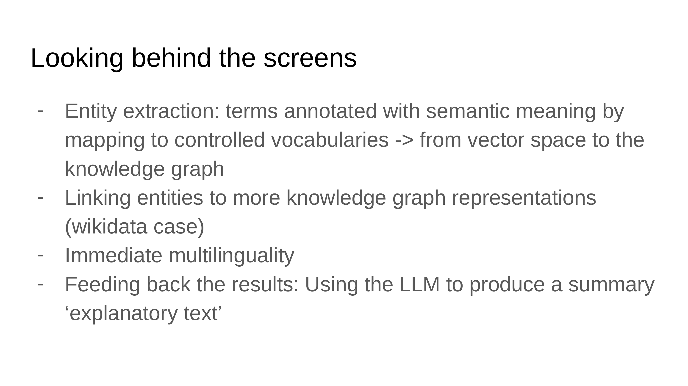
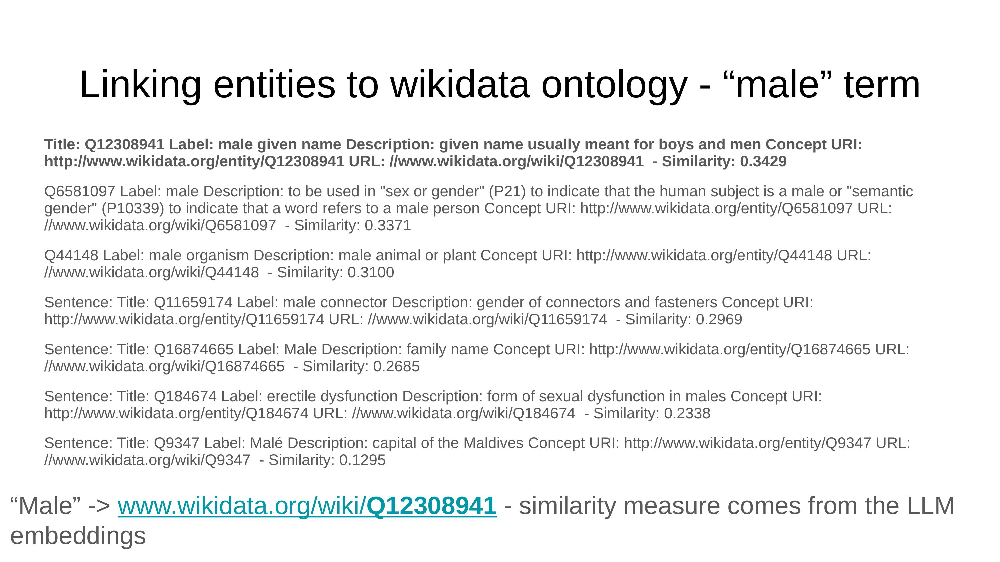

11 Science dynamics and AI
Overview
This chapter elucidates the development of an innovative AI-driven solution, meticulously crafted to manage the escalating volume of scientific information and to bolster knowledge production. Researchers from DANS (Data Archiving and Networked Services) and GESIS (Leibniz Institute for the Social Sciences) collaborated to confront the pervasive challenge of information overload, which frequently impedes the effective review, evaluation, and selection of scholarly content. Their core objective involved engineering an AI system capable of engaging in a “chat” with papers drawn from specific collections, thereby significantly enhancing information retrieval and human-machine interaction.
The team conceptualised the system as a “local” or “tailored AI solution,” comprising two principal components: Ghostwriter, which serves as the intuitive user interface, and EverythingData, encompassing the intricate back-end processing pipelines. Its foundational methodology employs Retrieval-Augmented Generation (RAG), seamlessly integrating both vector spaces and knowledge graphs. The authors construct vector spaces from data file content, encoding them through embeddings derived from various machine learning algorithms and Large Language Models (LLMs). Concurrently, a graph represents a metadata layer, meticulously integrated with diverse ontologies and controlled vocabularies, including principles of responsible AI, and expressed via the Croissant ML standard.
A key vision for this architecture, termed GraphRAG, seeks to unify graphs and vectors within a singular model, operating as a distributed AI. Within this framework, the LLM functions as both an interface and a sophisticated reasoning engine, connecting to a “RAG library”—essentially the graph—to navigate datasets and consume embeddings (vectors) as contextual information. The system demonstrably prevents hallucinations by strictly adhering to provided source material, offering precise, factual answers with direct references. It supports iterative query refinement and boasts robust multilingual capabilities, enabling queries in one language whilst processing documents in another.
The implementation involves ingesting articles, such as 100 papers from the method-data-analysis (mda) journal, into a vector store (Qdrant) and performing operations like term extraction, embedding construction, and enrichment. Crucially, the team expresses selected terms as structured data within a knowledge graph, often enriched with Wikidata, which contextualises embeddings and serves as a “ground truth” for validating LLM outputs. This decoupling of knowledge from the model facilitates benchmarking and ensures the sustainability of knowledge organisation systems for future scientific endeavours. The project ultimately aims to support human thought processes in formulating research questions, offering a controllable and cost-effective alternative to large, cloud-based LLMs.
11.1 Science Dynamics and AI: Addressing Information Overload

This initiative represents a collaborative endeavour between DANS, the data archive of the Royal Netherlands Academy of Arts and Science, and GESIS, another prominent archive actively engaged in research. The project addresses a fundamental challenge within the evolving landscape of scientific disciplines: the relentless growth and increasing differentiation of knowledge. This expansion invariably complicates the processes of reviewing, evaluating, and selecting pertinent information.
Crucially, the capacity to find and comprehend information remains a prerequisite for any form of knowledge creation, whether within individual cognitive processes or across broader academic communities. Modern machines, particularly the latest advancements in Artificial Intelligence, have undeniably accelerated this growth. Consequently, a pivotal question emerges: can these technologies also support the intricate knowledge production process, specifically within the domain of Information Retrieval?
The impetus for this work stemmed from extensive experimentation conducted by Slava Tikhonov, a senior research engineer at DANS, who pioneered the construction of various data pipelines. Rather than a straightforward pipeline, the system Tikhonov and his team developed is more accurately characterised as a complex “back of things”—a multifaceted architecture challenging to deconstruct and articulate. Ultimately, the project sought to apply and illustrate AI solutions to effectively manage the overwhelming deluge of information that increasingly submerges contemporary researchers.
11.2 Project Objectives and System Architecture

The central research question guiding this project explored the feasibility of constructing an AI solution capable of facilitating interactive dialogue with scholarly papers drawn from a curated selection. This inquiry necessitated an exploration of several interconnected concepts: information retrieval, the dynamics of human-machine interaction, and the burgeoning field of Retrieval-Augmented Generation (RAG) within generative AI.
The researchers selected the method-data-analysis (mda) journal as a specific use case to demonstrate the system’s capabilities. They introduced a workflow underpinning a ‘local’ or ‘tailored AI solution’, distinguishing its primary components with internal project names: Ghostwriter, which functions as the user interface, and EverythingData, a comprehensive term encompassing all underlying back-end processes. The presentation subsequently provided illustrative examples of both front-end and back-end operations, culminating in a summary and outlook on the project’s implications.
11.3 Ghostwriter: A Novel Information Retrieval Interface

The Ghostwriter interface represents a novel approach to information retrieval, designed to facilitate simultaneous interaction with both structured data and natural language inputs. The authors metaphorically describe this dual capability as “chatting with experts and librarians at the same time,” where the “librarian” embodies structured data and knowledge organisation systems, whilst the “expert” represents natural language.
Historically, traditional information retrieval, involving a query against a single database representation, necessitated prior knowledge of the database schema and its typical values to yield results. This scenario, likened to “Me and a database,” presented the classic information retrieval problem of formulating the precise query. More advanced information retrieval systems, operating on connected structured data or graphs, offered improvements. Here, the underlying machinery could suggest similar or superior queries based on schema interconnections, subsequently providing lists of potential results. This advancement, conceptualised as “Me and a librarian,” mirrors features found in Google and schema.org, though typically applied to web-scale interactions rather than local ones.
The advent of Large Language Models (LLMs) introduced another paradigm: a query against an LLM interprets natural language input and suggests results, also expressed in natural language. This interaction is akin to “Me and a library” or “Me and a round of experts.” Ghostwriter synthesises these approaches. It integrates a local LLM with target data collections and a network of additional data interpretation sources, accessible via Application Programming Interfaces (APIs). This sophisticated architecture enables the system to generate families of terms around a given query, identify related structured information, and ultimately return a comprehensive list of results. Crucially, applying this system iteratively empowers users to reformulate their questions, thereby gaining a deeper understanding of their actual query intent and the scope of the available data space.
11.4 Retrieval-Augmented Generation (RAG) Framework

Scientifically, this system firmly situates itself within the broader academic discourse surrounding Retrieval-Augmented Generation (RAG). A foundational understanding of this topic is readily available through resources such as Philip Rattliff’s “The GraphRAG Manifesto: Adding Knowledge to GenAI,” published by Neo4j.
The system’s efficacy hinges upon two primary ingredients. Firstly, the authors meticulously construct a vector space from the content of data files. This content undergoes encoding into embeddings, which capture both properties and their associated attributes. Various machine learning algorithms, leveraging different Large Language Models, compute these embeddings. Secondly, a robust graph serves as a comprehensive metadata layer. This graph seamlessly integrates diverse ontologies and controlled vocabularies, notably incorporating principles of responsible AI, and adheres to the Croissant ML standard for its expression.
A key strategic vision, termed GraphRAG, aims to unify both the graph and vector components into a singular, cohesive model. The authors designed this integration for local implementation, thereby fostering a form of Distributed AI. Within this architecture, the LLM assumes a dual role: it acts as the primary interface facilitating human-AI interaction and simultaneously functions as a sophisticated reasoning engine. The practical implementation involves the LLM connecting directly to a “RAG library,” which is essentially the graph, enabling it to navigate through datasets and consume the generated embeddings as contextual information.
11.5 Ghostwriter and EverythingData: Operational Workflow
The operational workflow commences with an input comprising a collection of articles. Whilst the demonstration specifically utilised a small, scraped collection from the MDA journal, the system readily accommodates any document collection. This input then enters the “EverythingData” component, which orchestrates a series of intricate back-end operations.
Initially, EverythingData stores the processed information within a vector store, specifically employing Qdrant. Subsequently, it executes a range of processes, including term extraction, the construction of embeddings, and various enrichments. A crucial step involves coupling this data with knowledge graphs: the team transforms selected terms into structured data within a graph and further enriches them, notably through integration with Wikidata. This strategic coupling serves to contextualise the embeddings, thereby imbuing them with enhanced semantic value.
All processed data converges into a unified “Vector Space RAG-Graph.” Users then interact with this comprehensive knowledge base via the query interface, formulating their questions in natural language. The system responds by providing two distinct outputs: a list of relevant documents, aligning with conventional information retrieval practices, and a concise explanatory summary text, intelligently generated by the system’s machinery in response to the user’s query. The Ghostwriter interface serves as the primary conduit for this seamless user interaction.
11.6 Ghostwriter: Indexing and Factual Retrieval

The developer’s approach to Large Language Models (LLMs) stems from early engagement, commencing with GPT-2 testing in 2020. Rather than relying on monolithic models, the strategy involves deconstructing the LLM training process into smaller, more manageable components, enabling their targeted application. This modularity grants the system remarkable flexibility in content processing: whilst demonstrated with scholarly papers, it seamlessly handles any web content and even spreadsheets, facilitating precise queries regarding specific data values.
Crucially, the system rigorously prevents hallucinations. Its responses are strictly factual and non-hallucinatory because it draws exclusively from the provided source material. Should information be unavailable within the designated source, the system transparently indicates “I don’t know.” This commitment to factual integrity is achieved by employing a relatively simple 1 billion parameter LLM, which, when synergistically combined with knowledge graphs, proves highly effective in answering complex questions.
For the presented use case, the researchers ingested 100 articles from the MDA (GESIS journal) website directly into Ghostwriter, establishing a dedicated collection. The system deliberately avoids reliance on any pre-ingested LLM knowledge; instead, it directly queries specific papers to extract factual information. The overarching goal remains to provide responses derived solely from the content present within the paper, without introducing extraneous details. This Ghostwriter instance, operating on MDA papers, is publicly accessible at https://gesis.now.museum.
11.7 Chatting with Papers: The Male Breadwinner Model Example

A practical demonstration of the Ghostwriter’s capabilities involved the query: “explain male breadwinner model to me.” In response, the system generated a comprehensive explanation of the Male Breadwinner Ideology, elucidating its societal concept, the expectation for men to serve as primary financial providers, and its observed influence on individual attitudes and entrepreneurial activities within Germany.
Crucially, the system meticulously provides direct references to the original scholarly papers from which the information was extracted, including titles such as “The Past, Present and Future of Factorial Survey Experiments…” and “Gender and Survey Participation…”. This rigorous source referencing ensures transparency and validates the information presented. The system’s design inherently prevents hallucinations, as it precisely identifies and retrieves information directly from the source texts.
Technically, this precision is achieved by segmenting each paper into numerous small blocks, with a unique identifier assigned to every block. The system then employs advanced Large Language Model techniques to intelligently connect and retrieve these blocks, applying specific weights to prioritise their relevance. Furthermore, the integration of knowledge graphs significantly enhances this process by accurately predicting which particular text segments will most effectively address a given question.
11.8 Iterative Approach to Query Refinement and Factual Integrity

The system’s commitment to factual integrity extends to its handling of information gaps. When presented with a refined query, such as “explain how data was collected on male breadwinner model,” and the direct information is unavailable within its indexed sources, the system explicitly states “there is no direct information.”
For instance, in response to this particular query, the system noted a study that utilised German data and employed a mixed-methods research strategy, including a survey experiment by Hanhmueller et al. (2015). It also referenced another article by Haase et al. (2016) that examined the male breadwinner model, yet it transparently indicated the absence of data collection details for this specific study. Furthermore, the interface incorporates an “Add paper” button, empowering users to contribute new articles to the collection. Crucially, any information added through this feature will subsequently be incorporated into the system’s knowledge base, enriching future query responses.
11.9 System Mechanics: Entity Extraction, Knowledge Graphs, and Multilinguality
Underpinning the system’s functionality lies a sophisticated entity extraction pipeline. This pipeline meticulously annotates terms with semantic meaning by mapping them to controlled vocabularies, thereby transforming raw vector space data into a coherent knowledge graph. Beyond this initial transformation, the system actively links these entities to more extensive knowledge graph representations, notably leveraging Wikidata. This integration with Wikidata serves a crucial purpose: it establishes a “ground truth,” providing a reliable benchmark against which the accuracy of LLM-generated answers can be rigorously validated.
A significant feature of the system is its immediate and robust multilinguality. This capability proves indispensable for processing scholarly papers published in diverse languages, such as Chinese or German, whilst enabling users to pose questions and receive answers in English. Ultimately, the Large Language Model orchestrates the synthesis of various text segments, culminating in the production of a concise, explanatory summary.
11.10 Fact Extraction and Wikidata Integration for Semantic Enrichment

The fact extraction process commences by segmenting user queries into granular pieces. A sophisticated knowledge organisation system then processes these segments, systematically revealing new and deeper levels of associated terms. Crucially, all extracted information undergoes a rigorous linking process with Wikidata, transforming free-form strings into structured, canonical identifiers.
These Wikidata identifiers confer substantial benefits. They inherently enable multilingual translations, providing access to a comprehensive array of associated properties. Consequently, the system can comprehend and process questions posed in various languages. The determination of conceptual similarity for these linkages relies upon the precise measurements derived from Large Language Model embeddings.
11.11 Multilingual Capabilities and the Future of Knowledge Organisation

The system’s robust multilingual capabilities are exemplified by its treatment of core query concepts, such as “bread winner mo,” as abstract entities. The Gemma3 Large Language Model then generates translations for these concepts into hundreds of languages. A pivotal innovation involves establishing a “ground truth” by decoupling knowledge from specific questions and papers. This is achieved by storing knowledge as a comprehensive list of Wikidata identifiers, maintained externally to the model itself.
This externalisation of knowledge facilitates rigorous benchmarking. Researchers can test various models, including those not yet fully trained, by posing identical questions and comparing the consistency of their generated identifier lists. This comparative analysis effectively identifies models unsuitable for specific tasks. Furthermore, this methodological approach supports the creation of robust benchmarks and champions the utilisation of knowledge organisation systems for future generations of scientists. Collaborations with prominent industry partners, including Google and Meta, underscore a commitment to ensuring the long-term sustainability of this process. Ultimately, the developers firmly believe that knowledge organisation systems represent the future paradigm for information management.
11.12 Live Demonstration and Philosophical Implications

A live demonstration showcased the system’s capabilities via the GESIS Leibniz-Institut für Sozialwissenschaften website, specifically within its “Ask Questions” section. When queried with “Rational Choice Theory,” the system promptly retrieved pertinent information, synthesised a summary from various papers, and provided direct references to the original sources. A subsequent, more specific query, “explain utility in Rational Choice Theory,” prompted the system to select distinct pieces of information from the indexed papers, yielding varied results whilst consistently referencing the same source documents.
An Application Programming Interface (API) further extends the system’s utility, enabling an automatic mode suitable for agentic architectures. This allows for the construction of sophisticated pipelines, facilitating automated result collection and the identification of novel knowledge. Users also possess the ability to augment the collection by adding new pages or content, either via a webpage URL or an RSS feed, which the system seamlessly incorporates. A compelling demonstration of its multilingual prowess involved posing a question in English and successfully retrieving information from a source paper written entirely in German, save for its abstract.
The developers emphasised the significant benefits of a local system, which affords greater control over data and mitigates the considerable costs and inherent control limitations associated with large, cloud-based Large Language Models. The interaction with scholarly papers is evocatively likened to engaging with an “invisible college.” Crucially, the system’s fundamental purpose transcends merely providing definitive facts or ultimate answers. Instead, it aims to stimulate human thought processes, assist in comprehending complex questions, and support the precise formulation of research questions. Ultimately, these technological possibilities should be perceived as powerful tools designed to augment and support human intellectual activity.